Members’ Cars
Here are assembled photographs and details of cars of current members. If information has been incorrectly recorded, or if other information is available (see sidebar for a template), please let our website editor, Rob, know (contact details also in the sidebar).
Paul Norton
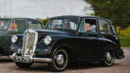
- Registration number: HTH 719
- Current owner: Paul Norton
- Membership number: 462
- Location: Bromsgrove, UK
- Year of manufacture: 1953
- Colour: Black
- Owned since: 1985
- Previous owners (known to have had 10):
- Miss Davies – Llanelli
- Port Tenant (1953)
- Neath (1976)
Phil Benson
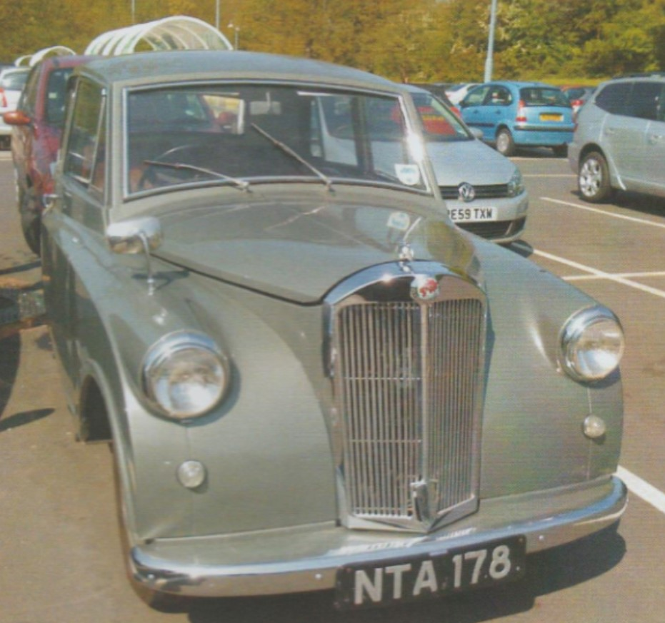
- Registration number: NTA 178
- Current owner: Phil Benson
- Membership number: 490
- Location: Preston, UK
Nico Poortvliet
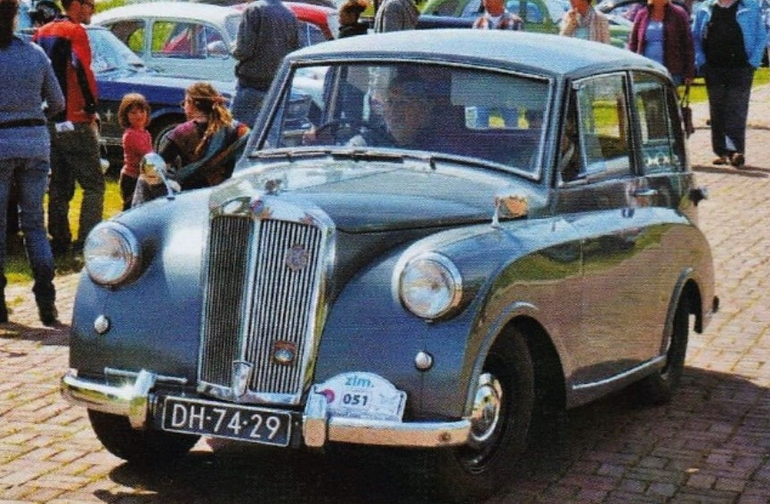
- Registration number: DH-74-29
- Current owner: Nico Poortvliet
- Membership number: 1059
- Location: The Netherlands
John Castle
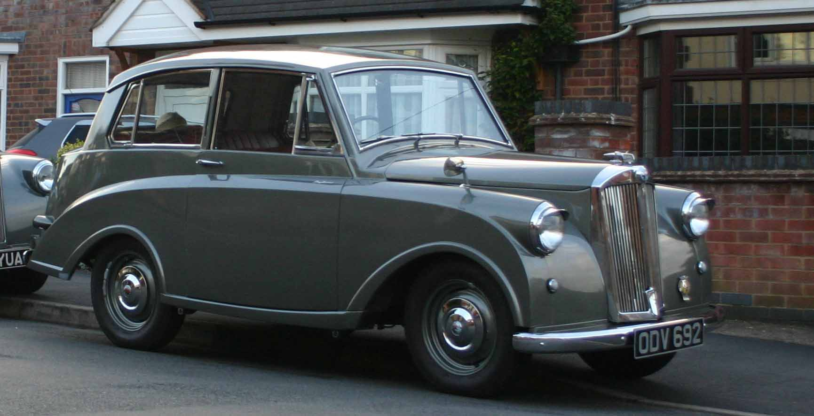
- Registration number: ODV 692
- Current owner: John Castle
- Membership number: 1091
- Location: Hinkley, Leicestershire, UK
Robert Hustwick
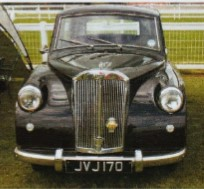
- Registration number: JVJ 170
- Current owner: Robert Hustwick
- Membership number: 1102
- Location: Haworth, Yorkshire, UK
Dave and Sue Gibbs
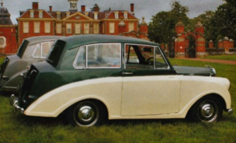
- Registration number: MSK 250
- Current owner: Dave and Sue Gibbs
- Membership number: 1107
- Location: Kingston-upon-Hull, UK
- Year of manufacture: 1952 (April/May)
- Colour: Green and white
- Car’s name: “Mabel”
- Previous owners:
- First registered in Leeds (1952).
- Original registration number was PUB 217, registered to a club member living in Tanygroes in Cardigan, Dyfed in March 1983.
- Next appeared with the current number plate in Wishaw, Scotland in October 1998.
- Sold-on in Feburary 2002.
- Other notes:
- It has an age-related plate; suspect that the PUB one was sold for a tidy sum!
- Current number plate is an old Scottish one from Wick.
Chad Brown
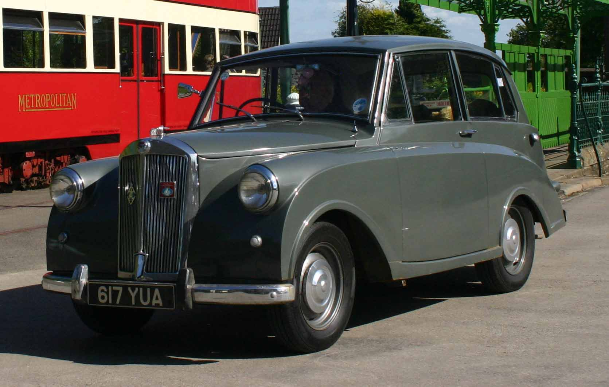
- Registration number: 617 YUA
- Current owner: Chad Brown
- Membership number: 1139
- Location: Stretton-under-Fosse, Warwickshire, UK
- Year of manufacture: 1953
- Colour: Grey
- Car’s name: “Little Nell”
Mike Clement
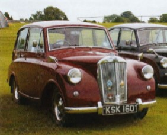
- Registration number: KSK 160
- Current owner: Mike Clement
- Membership number: 1140
- Location: Kellington, UK
- Colour: Burgundy
Werner Wotke
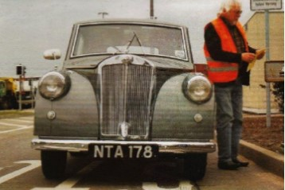
- Registration number: NTA 178
- Current owner: Werner Wotke
- Membership number: 1167
- Location: Hamburg, Germany
- Owned since: May 2013
- Previous owners:
- Phil Benson – Preston
Tony Goodyear
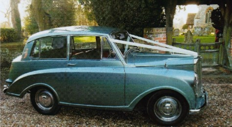
- Registration number: 792 UXU
- Current owner: Tony Goodyear
- Membership number: 1174
- VIN plate number: TT 27072 DL
- Location: Whitchurch, Hampshire, UK
- Year of manufacture: 1953
- Colour: Mist grey
- Owned since: 2013
- Previous owners (known to have had 2):
- Gerry Morley – Hedge End, Hampshire, UK
Paul Burgess
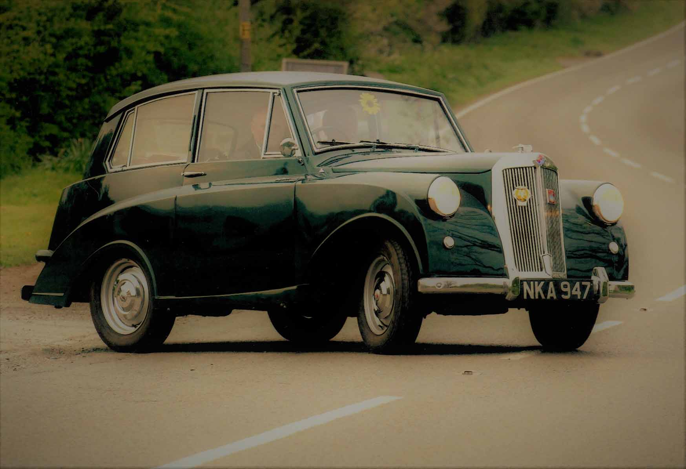
- Registration number: NKA 947
- Current owner: Paul Burgess
- Membership number: 1200
- VIN plate number: TT 19168 DL
- Location: Blaby, Leicestershire, UK
- Year of manufacture: 1952
- Colour:
- Metallic green (Rover British Racing Green) with brown/tan interior.
- Originally metallic jade green with a brown/tan interior.
- In the 80s it was black with a grey interior.
- Owned since: April 2015
- Previous owners:
- Registered in Liverpool (1952)
- South Africa (?)
- Hamilton, Cookstown, County Tyrone, NI ‘barn find’ by member 583 with HRP 547 which was used as a donor car (c. 1980)
- A McCann – Coleraine, NI (c. 1981–89)
- E Burgess, member 777 – Cambridgeshire, UK (c. 1989–94)
- C Johnson – Ipswich, UK (1994–95)
- D Porter – Ipswich, UK (1995–2008)
- M Smith – Norwich, UK (2012–15)
- Other notes:
- Build date: Wednesday 2nd April 1952
- Original engine number: TT 19317 E
- Current engine number: TT 26102 E
Rob and Barbara Davies
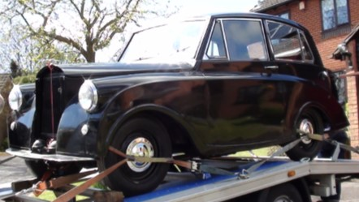
- Registration number: SPK 286
- Current owner: Rob and Barbara Davies
- Membership number: 1209
- VIN plate number: TT 26965 DL (formerly TT 20300 DL)
- Location: Chepstow, Monmouthshire, UK
- Year of manufacture: 1953
- Colour: Originally black, changed to white, changed to black, now comet blue
- Car’s name: “Margaret”
- Owned since: April 2016
- Previous owners:
- Clive Lungmass, Lichfield, UK
- Other notes: VIN plate number formerly “TT 20300 DL”. Had non age-related registration number changed to SPK 286 and VIN number changed.
David Campbell
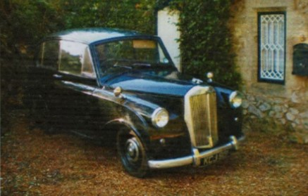
- Registration number: KCJ 919
- Current owner: David Campbell
- Membership number: 1217
- Location: St Lawrence, Ventnor, IOW, UK
- Previous owners:
- Abergavenny, Monmouthshire, UK
- David Phillips – Near J3 M42, UK
Dominique Soulas-de Russel
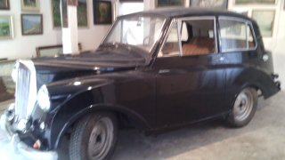
- Registration number: 6004WB17
- Current owner: Dominique Soulas-de Russel
- Membership number: 1227
- Location: 37270 Verets, France
Mark Smith
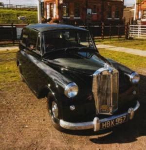
- Registration number: HBX 957
- Current owner: Mark Smith
- Membership number: 1239
- Location: Loughborough, Leicestershire, UK
- Year of manufacture: 1952
- Car’s name: “Mildred”
- Owned since: 2017
- Previous owners:
- Bought off Mark's friend Nick